脂代谢&线粒体药理研究思路
原文：https://mp.weixin.qq.com/s?__biz=MzAwMzIzOTk5OQ==&mid=2247505328&idx=1&sn=26b61dcf59c520905ab7ce660a45c741&chksm=9b3cace0ac4b25f60434ecad63e66c929377c5694d731905818d1a316513f2b08748203470a0#rd 合集：文献速递
Biomamba荐语
今天要介绍的文章发表于《British Journal of Pharmacology》，影响因子9.5。不同与以往的分享，除了代谢组学外本篇文章几乎没有生物信息学内容，但作者检测了一些实验指标结合代谢组学完成了小檗碱介入脂代谢&线粒体调节从而治疗DKD的机制，感兴趣的同学可以阅读一下原文。
链接： https://www.ncbi.nlm.nih.gov/pmc/articles/PMC7393204/doi： 10.1111/bph.14935
Abstract
● 背景脂代谢紊乱和线粒体生物能量学紊乱在糖尿病肾病(DKD)的发生发展中起着关键作用。小檗碱：中药黄连中的一种生物碱，对于糖尿病及其并发症有多种治疗作用（调节糖脂代谢、改善胰岛素的敏感性、减轻氧损伤）****●** 目的研究小檗碱的肾脏保护作用。●方法 样本:DKD患者样本、DKD模型(db/db小鼠)、足细胞利用代谢组学来描述能量代谢的特征。研究了小檗碱调节线粒体功能和生物能量学的分子靶点和机制，以及对DKD小鼠代谢改变的影响。● 结果代谢组学分析表明，DKD患者的线粒体能量使用发生了改变，线粒体功能障碍普遍存在。在db/db小鼠中，小檗碱治疗逆转了代谢紊乱、足细胞损伤和肾小球硬化。小檗碱可抑制DKD小鼠模型和培养的足细胞中的脂质堆积、线粒体ROS的过度生成、线粒体功能障碍和脂肪酸氧化不足。小檗碱的上述保护作用机制：激活过氧化体增殖物激活受体γ辅活化子-1α(PGC-1α)信号通路，从而促进足细胞线粒体能量平衡和脂肪酸氧化。● 结论**PGC-1α介导的线粒体生物能量学在脂质紊乱所致小鼠足细胞损伤和糖尿病肾病的发生发展中起关键作用。小檗碱恢复PGC-1α活性和能量平衡可能是DKD的潜在治疗方式。
Introducion
● 脂毒性可引起氧化应激损伤、破坏肾脏能量平衡，从而导致足细胞损伤和肾小球硬化。
● 肾脏细胞需要大量能量(氧化膦酸化的ATP)维持正常功能。脂肪酸氧化(FAO)约占总供应的70%。作为肾脏细胞的主要能量来源-线粒体在此过程中起重要作用。
● 过氧化物酶体增殖物激活受体γ辅活化子1α(PGC-1α)是线粒体功能的关键上游转录调节因子。相关实验证明：缺乏pGC-1α的小鼠表现出氧化代谢和线粒体含量显著降低。相反，pGC-1α活性增加可以促进线粒体的生物发生和脂肪酸氧化，从而增加线粒体基因的表达并抑制肾脏纤维化和足细胞损伤。
● pGC-1α表达降低和线粒体功能缺陷会导致细胞凋亡和去分化，从而导致包括糖尿病、肾功能衰竭和心血管疾病在内的各种代谢性疾病。
● 足细胞是限制蛋白质渗入尿液的最后一道过滤屏障。线粒体OXPHOS是足细胞的能量来源-游离脂肪酸(FFA)。足细胞对高水平的FA非常敏感。FFA摄取增加、脂肪酸氧化减少以及细胞内脂质积聚对足细胞有害，导致线粒体活性氧种(MitoROS)的过度生产、线粒体动力学和生物能量学的失衡。
● 寻找能够加强FAO和保护线粒体功能的新化合物，以减少脂质积累和代谢紊乱。
● 小檗碱:中药黄连中的一种生物碱，对于糖尿病及其并发症有多种治疗作用(调节糖脂代谢、改善胰岛素的敏感性、减轻氧损伤)
● 小檗碱可以通过靶向pGC-1α来调节能量代谢，这种生物碱以AMP激活的蛋白激酶(AMPK)依赖的方式发挥治疗作用(Zhang等，2014年)。
Methods
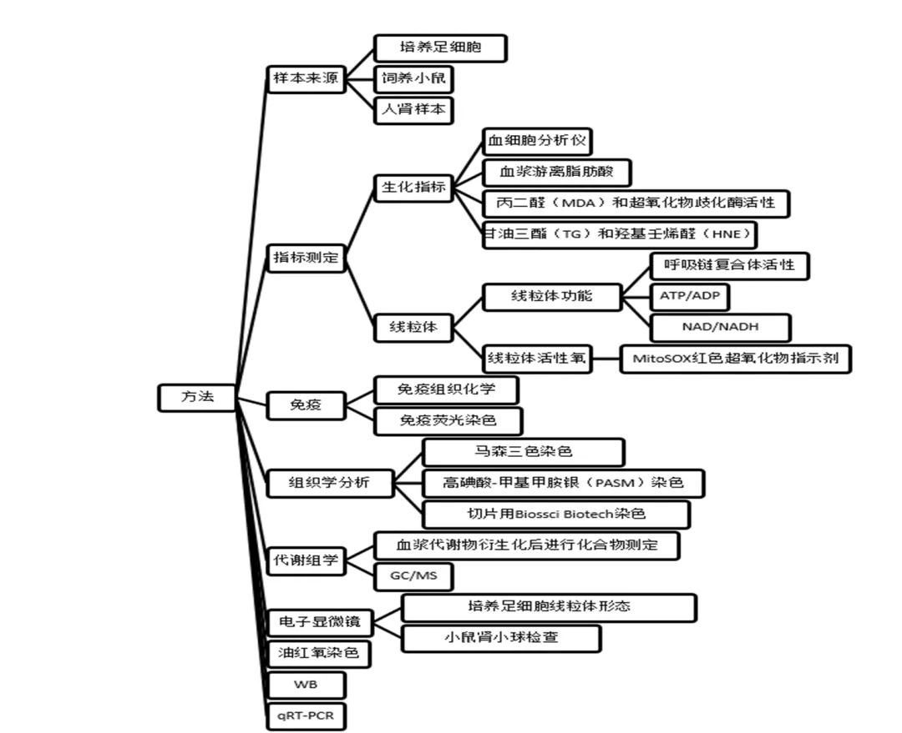
Results
1、小檗碱改善db/db小鼠的代谢特征并减轻肾脏中的脂质积聚
①小檗碱治疗8周可明显控制糖尿病小鼠的体重增加。
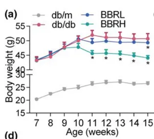
②小檗碱有效地改善了胰岛素敏感性
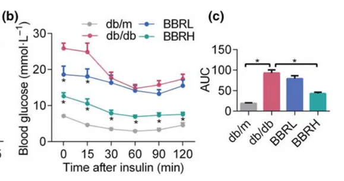
③小檗碱有效地改善了葡萄糖耐量
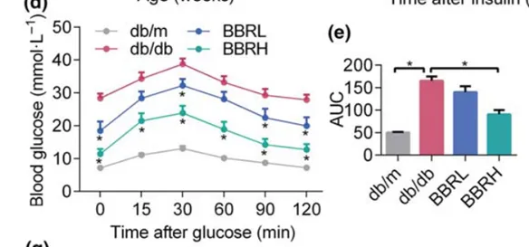
④小檗碱有效地降低了尿微量白蛋白的排泄，反映在24小时白蛋白排泄率(AER)--DKD的经典指标上。
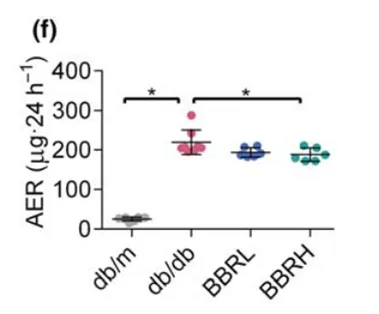
⑤小檗碱处理组血浆游离脂肪酸和肾小球甘油三酯含量也明显降低。
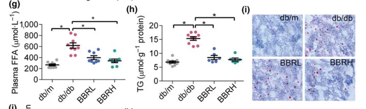
（i：油红氧染色）
⑥用PA处理的培养的足细胞中，小檗碱显著减轻了脂质的积聚
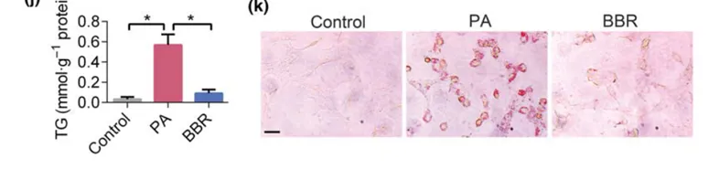
●这些改善的代谢条件在接受高剂量黄连素治疗的小鼠组中尤为明显。所有这些数据表明，小檗碱可以改善db/db小鼠紊乱的代谢特征，缓解DKD的典型症状，并减少肾脏中的脂质堆积。2、小檗碱减轻脂质过载所致的ROS过量产生和足细胞损伤 FFA的积聚会导致过量的ROS生成，进而可能导致脂质过氧化、足细胞损伤和肾小球病变。我们首先检测了DKD患者肾小球中足细胞的标志物--裂隙隔蛋白(SDS)。
① 与对照组相比，DKD患者nephrin和podocin的蛋白水平显著降低。
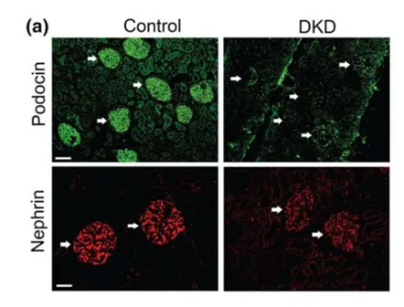
（人肾样本中的Podocin和neparin免疫荧光，白色箭头是肾小球）
② 然后，我们检查了db/db小鼠的肾脏样本，观察到小檗碱保护了SDS。（Podocin免疫荧光、neparin免疫组织化学染色和扫描电子显微镜观察小鼠肾脏。扫描电子显微镜图像中的红色星号表示足细胞足突消失。）
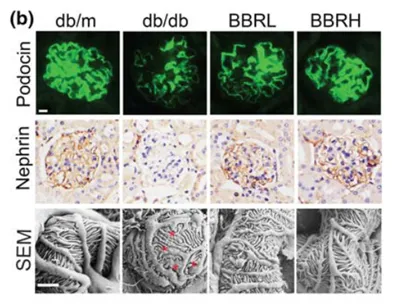
③小檗碱保持了足细胞结构（肾小球基底膜厚度和肾小球纤维化程度反映）（马森三色染色和PASM染色）
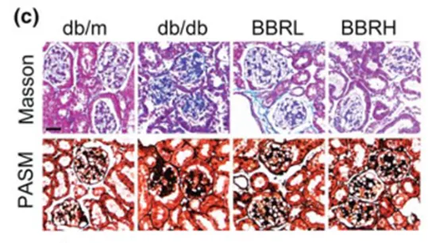
④小檗碱对肾组织切片中足细胞的保护作用与培养足细胞的数据一致。（培养足细胞CD2AP和neparin免疫荧光）
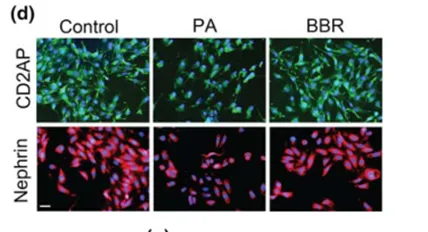
⑤DKD患者血浆中ROS水平升高，反映在丙二醛(MDA)和超氧化物歧化酶(SOD)检测中。
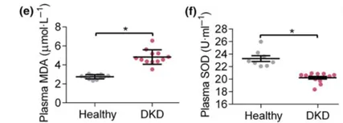
⑥在糖尿病小鼠肾小球和培养的足细胞中，小檗碱缓解氧化应激损伤，反映在HNE（4-羟基壬烯酸(HNE)是两个强毒力的脂质过氧化终产物之一，常常作为判断脂质过氧化的指标）水平。
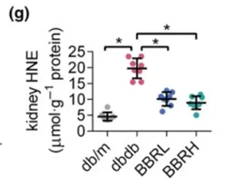
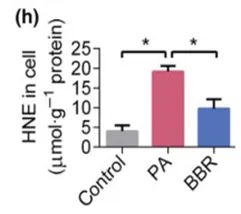
⑦由于ROS主要是在电子传递过程中在线粒体中产生的，我们对PA诱导的足细胞mtROS进行了检测，发现PA显著增加了mtROS的产生，而小檗碱处理后则减少了mtROS的产生。
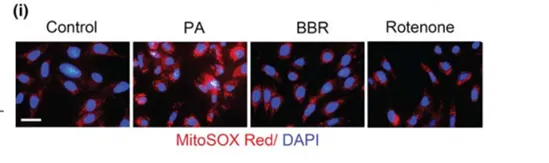
●综上所述，这些数据表明，小檗碱可以保护肾小球足细胞免受FFA诱导的氧化损伤。
3、小檗碱改善线粒体功能并增加脂肪酸氧化（FAO）
DKD患者ROS产生增加与线粒体功能障碍、线粒体OXPHOS受损、FAO不足和能量平衡紊乱密切相关。在我们的病例对照研究中，用气相色谱-质谱仪(GC/MS)测定了DKD患者和健康对照组的血浆代谢物谱。参与者的临床和生化特征如表2所示。DKD患者的空腹血糖(FBG)、糖化血红蛋白(HbA1c)、AER水平高于健康对照组，而高密度脂蛋白-胆固醇(HDLC)水平低于健康对照组。
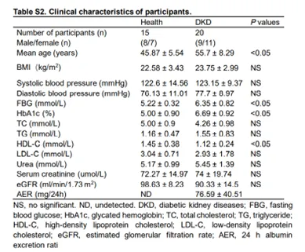
①通过正交偏最小二乘判别分析(OPLS-DA)散点图(图S1)和热图分析(图3a)显示两组之间明显的分离。（对DKD患者和对照组中检测到的代谢物进行热图分析）
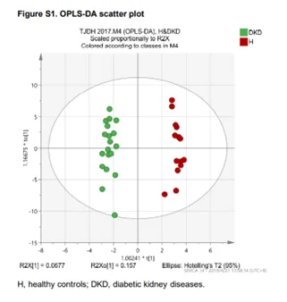
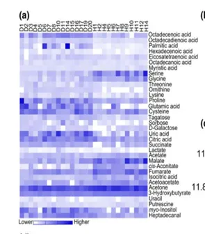
②血浆代谢物的相对丰度如表1所示。
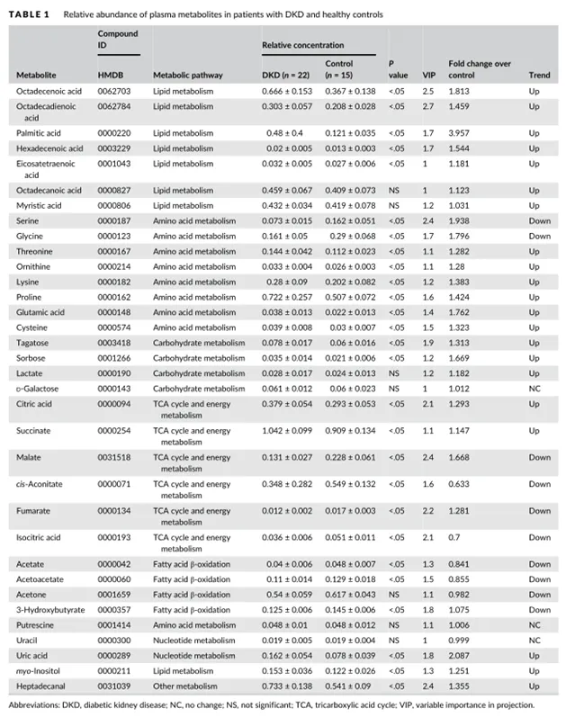
③根据VIP分析和t检验分析，共检测到106种代谢物，其中27种代谢物在病例组和对照组之间存在显著差异。特别是，DKD组的长链脂肪酸、尿酸、柠檬酸、琥珀酸水平较高，丝氨酸、甘氨酸和某些三羧酸循环(TCA)中间体(苹果酸、顺式乌头酸、富马酸和异柠檬酸)水平较低。此外，DKD患者的3-羟丁酸、乙酰乙酸乙酯和丙酮（FAO产物）水平显著降低，这表明FAO受损。
④与糖尿病肾病进展相关的代谢途径的改变如图3b，c所示。这些代谢物大致可分为三种途径：脂类代谢和脂肪酸β氧化、氨基酸代谢和碳水化合物代谢。特别是，观察到参与TCA循环的线粒体代谢物的异常水平。所有这些数据表明，DKD患者的线粒体燃料使用发生了改变，并出现了全身线粒体功能障碍。（b代谢物大致分为不同类别；c主要涉及代谢途径的改变）
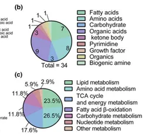
⑤鉴于线粒体代谢标记物的这些异常，我们接下来评估了小鼠肾小球和培养的足细胞中的线粒体能量代谢。筛选了线粒体FAO的关键基因以及与OXPHOS和TCA循环相关的酶活性。如图3D-I所示，在db/db小鼠和PA处理的足细胞中，控制β氧化的基因的表达、参与OXPHOS的复合体I、IV、V的活性以及参与TCA循环的柠檬酸合成酶的活性都降低了。用小檗碱治疗的小鼠使这些变量正常化，并恢复了线粒体能量的稳态。（d足细胞FAO相关基因的表达。(e-f)小鼠肾足细胞线粒体复合体活性。(H)培养足细胞的线粒体复合体活性。i小鼠肾足细胞线粒体柠檬酸合成酶活性。）
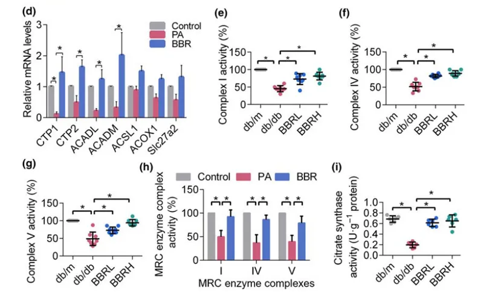
4、小檗碱促进线粒体生物合成并增加能量输出
①线粒体FAO和OXPHOS活性下降的直接后果是能量输出和线粒体生物合成减少。为了阐明这一点，对DKD患者和对照组的肾组织切片进行了线粒体VDAC和足细胞标记物neparin的双重免疫荧光分析。我们观察到DKD患者肾小球中足细胞数量和线粒体含量显著减少。
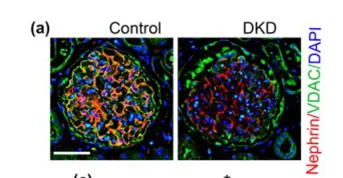
②在db/db小鼠的样本中也得到了类似的结果，这些变化通过小檗碱治疗得到了改善。（小鼠肾脏冰冻切片的免疫荧光，分别为nephrin(红色)和VDAC(绿色)染色。细胞核用DAPI反染(蓝色)。）
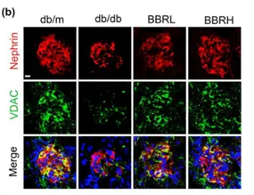
③然后，我们测定了db/db小鼠足细胞的能量产生，这是由NAD+/NADH比率反映的。我们的结果表明，小檗碱可以改善糖尿病小鼠肾脏中NAD+/NADH的比率。（肾小管足细胞线粒体NAD/NADH比值）

④培养足细胞的结果还表明，小檗碱保护线粒体生物合成(图4d，e)和增加能量产生。（d Mito Tracker Red染色的足细胞线粒体的3D图像。e:VDAC染色观察线粒体形态和含量。）
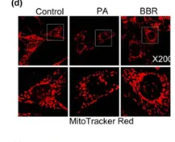
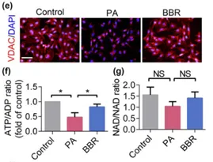
⑤根据这些发现，mtDNA拷贝数的测量表明PA诱导的足细胞显著减少，这一点被小檗碱干预逆转，反映在COX4i1的表达。而TFB1m和TFB2m水平无显著差异。(用RT-PCR检测线粒体生物发生相关基因的表达。)
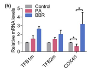
⑥对与能量代谢和线粒体生物合成相关的基因的进一步评估表明，小檗碱显著增加了PA诱导的足细胞中AMPK、PPAR和PGC1α的mRNA的表达。(足细胞线粒体生物合成调控因子的基因表达。)
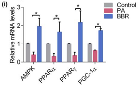
5、小檗碱通过AMPK/PGC1α调节线粒体能量代谢
①PGC-1α控制并由几个涉及线粒体动力学和生物能量学的知名调控因子控制。鉴于AMPK对能量代谢的深刻影响，我们测试了小檗碱是否可以激活AMPK，然后AMPK通过激活PGC-1α来调节线粒体能量平衡。结果显示，小檗碱增加了糖尿病肾脏(图5a-d，i)和培养足细胞(图5f-h)中活化的AMPK和PGC-1α的蛋白水平。通过小檗碱处理恢复了FAO控制酶CPT1的表达(图5b，e，g，h)。
(a:肾切片，Podocin和PGC-1α双重染色b: 小鼠足细胞AMPK、PAMPK、PGC-1α和CPT1蛋白表达的蛋白质印迹f：免疫荧光法检测足细胞中PGC-1α的表达水平g: 培养足细胞AMPK、PAMPK、PGC-1α和CPT1蛋白表达的免疫印迹i:免疫组织化学方法检测PGC-1α在小鼠肾小球中的表达)
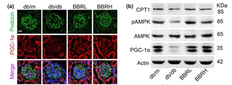
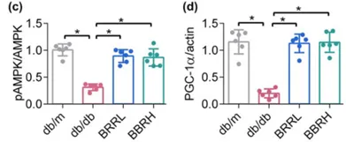
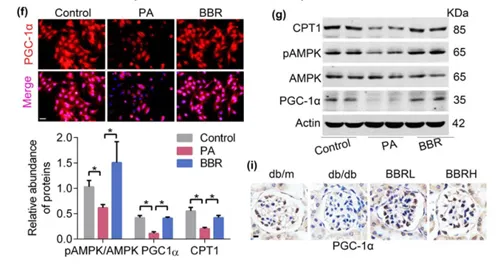
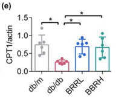
②接下来，我们通过使用AMPK的抑制剂化合物C来确定AMPK和PGC-1α之间的调控关系。结果显示，抑制AMPK后，PGC-1α和磷酸化ACC的蛋白水平降低，而小檗碱处理可逆转这一趋势(图6a，b)。
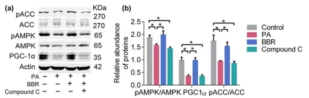
③为了进一步阐明PGC-1α在小檗碱调控线粒体功能和FAO的作用，我们使用PGC-1α siRNA(以杂合寡核苷酸为对照)下调其表达。如图6c-j所示，PGC-1α下调的足细胞与pACC水平降低、线粒体碎裂、mtROS增加、三磷酸腺苷含量降低和严重的脂质堆积有关。值得注意的是，小檗碱对FAO和线粒体功能的影响在很大程度上被PGC-1α下调所消除。这些结果表明，小檗碱可能通过调节AMPK/PGC-1α信号通路来保护足细胞线粒体及相关的能量代谢。
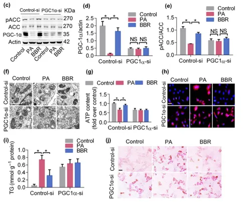
6、小檗碱通过下调CD36的表达抑制游离脂肪酸摄取
①接下来，我们研究了与FFA摄取和合成相关的蛋白质。细胞摄取FFA的主要媒介是CD36(清道夫受体B2)，CD36的上调被认为会导致脂质堆积、ROS产生增加、细胞凋亡和肾脏纤维化。根据这些发现，我们发现在PA诱导的足细胞中，CD36的基因表达上调，而不是脂肪酸运输蛋白1(FATP1)的基因表达上调。（足细胞中FFA摄取相关基因的表达）

②我们的结果还显示，在PA诱导的足细胞(图7b-d)和db/db小鼠(图7e-g)中，CD36的蛋白水平显著上调，而pACC显著降低，这种失调被小檗碱显著抑制。（b免疫荧光法检测足细胞CD36表达 c培养足细胞对游离脂肪酸的摄取和氧化相关蛋白含量。E:小鼠肾足细胞对游离脂肪酸的摄取及氧化相关蛋白含量）
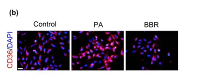
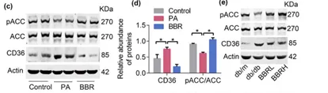
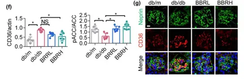
●综上所述，我们的研究结果提示小檗碱可能通过调节CD36的表达来影响FFA代谢和减轻脂质堆积。
总结
本研究主要得出了关于小檗碱的以下结论：
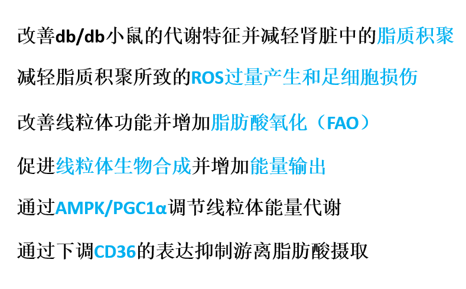

如何联系我们

 公众号后台消息更新不及时，超过48h便不许回复读者消息，这里给大家留一下领取资料及免费服务器(生信分析为什么要使用服务器？)的微信号 ，方便各位随时交流、提建议（科研任务繁重，回复不及时请见谅）。此外呼声一直很高的交流群 也建好了，欢迎大家入群讨论：
公众号后台消息更新不及时，超过48h便不许回复读者消息，这里给大家留一下领取资料及免费服务器(生信分析为什么要使用服务器？)的微信号 ，方便各位随时交流、提建议（科研任务繁重，回复不及时请见谅）。此外呼声一直很高的交流群 也建好了，欢迎大家入群讨论：
大家可以阅读完这几篇之后添加给生信入门初学者的小贴士 如何搜索公众号过往发布内容

 您点的每个赞和在看，我都认真当成了喜欢
您点的每个赞和在看，我都认真当成了喜欢